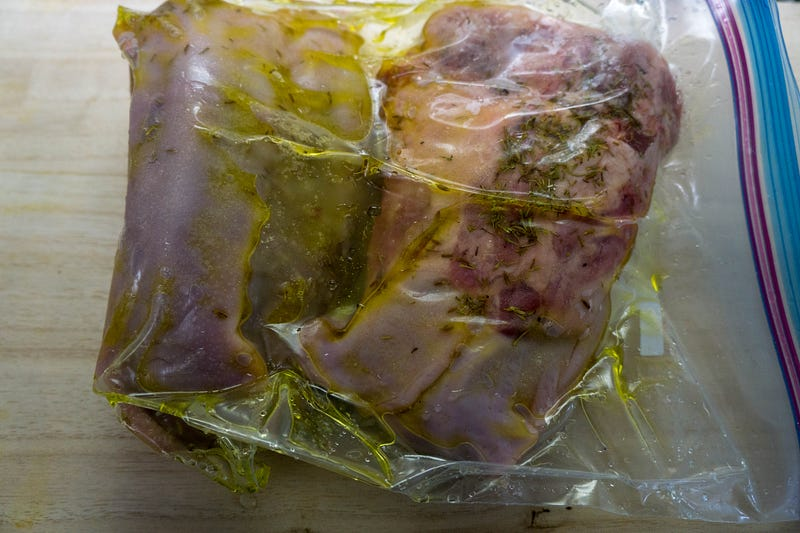
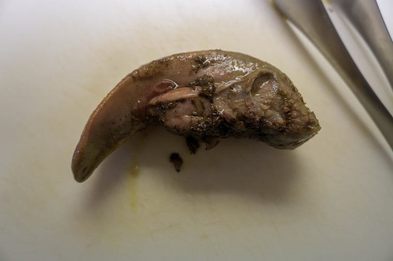
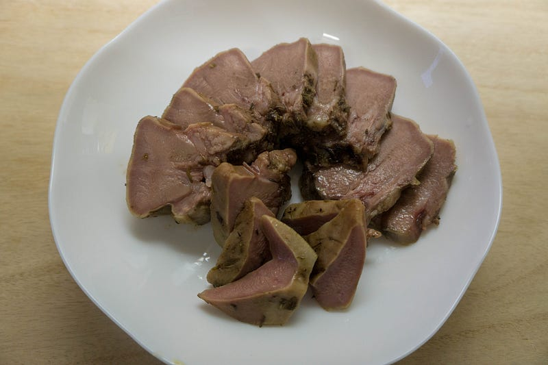
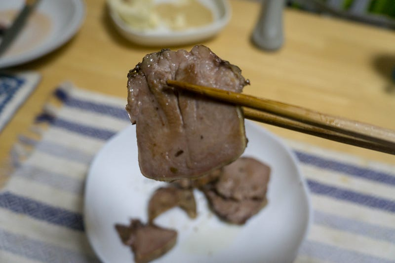

豚タンを低温調理してみる
豚タンを低温調理してみる
前回のタコと同じタイミングで豚タンもやってみた。
タコを初めて低温調理してみるも、玉砕
今までやったことのなかった食材をanovaでやる実験をしてみようと思って、タコをやってみようと思ったのだけど、あまり参考になるレシピが見つからず、試行錯誤でやってみた。medium.com
今までやったことのなかった食材をanovaでやる実験をしてみようと思って、タコをやってみようと思ったのだけど、あまり参考になるレシピが見つからず、試行錯誤でやってみた。medium.com
牛タンのレシピはよく見るんだけど、牛タン高いじゃん…
Will It Sous Vide? Totally Tasty Beef Tongue
Hello, my beautiful babies, and welcome back to another delicious installment of Will it Sous Vide? the weekly column…skillet.lifehacker.com
Hello, my beautiful babies, and welcome back to another delicious installment of Will it Sous Vide? the weekly column…skillet.lifehacker.com
というわけでお値段／重量から換算すると2倍くらいの差があったので、冷凍の豚タンを買ってきた。
Amazonだとちょっとだけ割高だけど、地元の業務用スーパーで1200円くらいだったかな。4本入ってる。

オリーブオイル、ディル、クミン、そして塩。68℃で23時間。
anovaから出してみましょう。なるほど、舌ですね。

切って軽くあぶってみる。お。これは。

これは結構厚切りにしても柔らかいし、うまいです！
冷凍のせいか多少のタン独特の臭みは感じるけど、ちゃんと匂い消しのハーブを突っ込んでおいたので、かなり良い感じ。レモンでさらに香りをつければセブンイレブンのタンのさらに柔らかい感じになると思う。
スモークタン ７５ｇ | セブンプレミアム公式 セブンプレミアム向上委員会
セブンプレミアム商品開発コミュニティサイ『セブンプレミアム向上委員会』公式サイトです。セブンプレミアムの新商品や話題の商品を紹介しています。7premium.jp
セブンプレミアム商品開発コミュニティサイ『セブンプレミアム向上委員会』公式サイトです。セブンプレミアムの新商品や話題の商品を紹介しています。7premium.jp
結構汁は出てたけど、煮るのに比べたら肉の味がちゃんと残ってる感じ。

これでセブンに買い出しにいかなくてもタンをつまみにできる。調理時間はまだ要研究。牛タンの時間を目安にして23時間やったんだけど、豚タンは小さめだし、もう少し短くてもいけるんじゃないかな、これ。
残りの3本のタンは冷凍しておいた。後日また焼いてみたり、煮てみたりしたい。